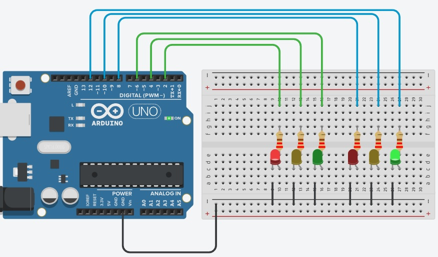

Página projeto com Tinkercad – SEMÁFORO DUPLO:
Circuito Projeto

Fonte:
Tinkercad
Código C++
void setup()
{
pinMode(12, OUTPUT);
pinMode(2, OUTPUT);
pinMode(10, OUTPUT);
pinMode(8, OUTPUT);
pinMode(6, OUTPUT);
pinMode(4, OUTPUT);
}
void loop()
{
digitalWrite(12, HIGH);
digitalWrite(2, HIGH);
delay(7000); // Wait for 7000 millisecond(s)
digitalWrite(10, HIGH);
digitalWrite(12, LOW);
delay(2000); // Wait for 2000 millisecond(s)
digitalWrite(8, HIGH);
digitalWrite(6, HIGH);
digitalWrite(10, LOW);
digitalWrite(2, LOW);
delay(7000); // Wait for 7000 millisecond(s)
digitalWrite(4, HIGH);
digitalWrite(6, LOW);
delay(2000); // Wait for 2000 millisecond(s)
delay(1); // Wait for 1 millisecond(s)
digitalWrite(4, LOW);
digitalWrite(8, LOW);
}